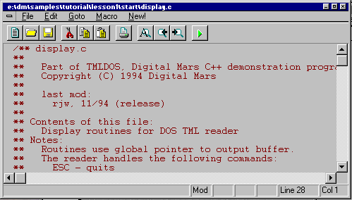

IDDE
Reference
Part 1: Welcome to Digital Mars C++
1. Introducing Digital Mars C++
2. Introducing the IDDE
Part 2: Creating an Application with Digital Mars C++
3. Starting a Project and Defining Workspaces
4. Generating an Application Framework
5. Defining Classes and Their Hierarchies
6. Editing Program Code
7. Adding Look and Feel with Resources
8. Testing an Application
Part 3: Learning Digital Mars C++ by Example
9. Introduction to the Tutorial
10. Lesson 1: Create the DOS Application
11. Lesson 2: Generate an Application Framework
12. Lesson 3: Customize the Interface
13. Lesson 4: Add Messages with ClassExpress
14. Lesson 5: Add a Dialog Box with ClassExpress
Part 4: More about Creating Programs
15. More about Projects and Workspaces
16. More about Project Build Settings
17. More about AppExpress
18. More about ClassExpress
19. Class Editor Reference
20. Hierarchy Editor Reference
21. Text Editor Reference
22. Using Version Control
Part 5: More about Testing Programs
23. Controlling and Configuring the Debugger
24. Commands Available in Debugging Mode
Part 6: About Managing Resources
25. ResourceStudio Resource Editor
26. Dialog Editor
27. Menu, Accelerator and String Table Editors
28. Bitmap, Cursor, Icon, and Font Editors
29. Version Information and Custom Resource Editors
Part 7: Appendixes
A. Expression Evaluation
B. IDDE Settings and Command-Line Options
C. Using NetBuild
|
10. Lesson 1: Create the DOS Application
In this chapter you learn basic procedures for using the Integrated
Development and Debugging Environment (IDDE) while building a
DOS version of the TML Reader. This lesson teaches you to:
- Start the IDDE and load a project
- Edit source code
- Build and run the application
- Create a debugging workspace
- Run the application in debugging mode
Most of the code for the application has already been written; during
the lesson you will add a few final lines. At the end of the lesson,
you will have a DOS executable that can read and display TML files.
Starting the IDDE and Loading a Project
To start the IDDE:
First, start the IDDE. If you haven't yet installed Digital Mars C++,
please see the Getting Started Guide for installation instructions.
- Double-click on the Digital Mars C++ 16-bit group icon in
the Windows Program Manager. (If the Digital Mars C++
16-bit group is already open, you may omit this step.)
- Double-click on the Digital Mars C++ icon. The IDDE main
window opens at the top of the screen (see Figure 10-1).
[Figure 10-1 The IDDE main window and Workspace toolbox]
The IDDE main window contains a title bar and a menu bar. Below
the main window is the Workspace toolbox, used to switch between
workspaces (described later in this chapter). The Workspace toolbox
is currently docked under the IDDE menu bars. Additional IDDE
windows open below the main window and Workspace toolbox.
You can open other IDDE windows by selecting their names from
the Goto View submenu of the Window menu; close any window
by clicking the Close button in its upper-left corner.
Next, you must load the DOS TML Reader project. (A project is a
collection of source and other support files from which an
executable is generated.) To open the project:
- Choose Open from the IDDE's Project menu.
- Use the Open Project dialog box to find
samples\tutorial\lesson1\start\tmldos.prj,
located under the directory in which you installed
Digital Mars C++.
- Click OK.
You can view the project's source file list in the Project window. If
the Project window is not already open, choose Project from the
Goto View submenu of the Window menu.
In the next section you edit one of the source files.
Editing Source Code
The DOS TML Reader's source code needs a minor addition before
compilation. To add the missing lines, you must edit the source code
in a Source window.
- In the Project window, double-click on display.c.
A Source window opens, showing the contents of the
source file (see Figure 10-2).

[Figure 10-2 Source window]
- Choose Function from the Source window's Goto
menu. The Goto Function dialog box opens.
- Select Display from the Function Name listbox, then
click OK. The editor moves to the start of Display().
- Choose Find from the Edit menu. The Find dialog box
opens.
- In the Pattern textbox, type LESSON 1.
- Click on Next.
- You should see the following line in the source code:
/* INSERT CODE FOR LESSON 1 HERE! */
Just after this comment, but before the procedure's
closing brace, insert the following two lines of code:
disp_move(disp_numrows - 1, 0);
disp_eeol();
- Choose Save from the File menu.
The DOS TML Reader is now ready to be compiled.
In the next section you learn to build and run the project, and you
look at a sample document.
Building and Running the Application
To build and run the DOS TML Reader:
- From the IDDE's Project menu, choose Rebuild All.
The Output window opens automatically. This window informs you
of build progress and displays any warning or error messages. If no
errors exist, you see the message "Successful build." (You can still
work in the IDDE while the build is in progress, because the process
of building is multitasked. The Output window can be behind other
IDDE windows, even when messages are being written to it.)
- From the IDDE's Project menu, choose Arguments.
The Run Arguments dialog box opens.
- Type sample.tml into the textbox and click OK.
- From the Project menu, choose Execute Program.
The TML Reader opens in full-screen mode, showing the formatted
contents of sample.tml (see Figure 10-3). You can use Page Up,
Page Down, and the arrow keys to scroll through the file. To execute
a hyperlink, position the cursor over text shown in reverse video and
press Enter. Press Escape to exit the program and return to the IDDE.

[Figure 10-3 The DOS TML Reader]
The DOS TML Reader is believed to be without any significant bugs.
However, most applications have bugs during at least some of their
development phase. To help you locate and correct incorrect code
as quickly as possible, the IDDE has powerful debugging features.
The following sections show you how to set up a workspace for
debugging and debug your source code.
Setting Up a Workspace for Debugging
A workspace is an arrangement of windows on the screen. You can
set up several useful configurations of IDDE windows, then switch
between them by clicking on workspace names in the Workspace
toolbox.
The IDDE predefines a workspace named Debugging, which
contains a configuration of windows useful for typical debugging
sessions. Here, however, we define a new workspace specific to this
lesson, to show you how this is done and to avoid disturbing any
customizations you may have already made to the Debugging
workspace.
To create a workspace for debugging:
- Choose New from the Workspace submenu of the
IDDE's Environment menu.
- When prompted for a workspace name, type Lesson1.
- Click OK.
The IDDE creates a new workspace and adds the workspace name
to the Workspace toolbox. Initially the new workspace is empty,
with the exception of a few toolboxes that are not needed here. To
close the toolboxes, click the Close buttons in the upper-left corners.
Next, you need to add windows to the workspace. During
debugging, the Source window follows program execution, the
Function window views a list of functions in a particular program
module, the Data/ Object window views program data, and the Call
window displays the program call chain.
- To open the Project window, press Ctrl+Shift+P.
- In the Project window, double-click on main.c. A
Source window opens.
- To open the Function window, press Ctrl+Shift+F.
- To open the Data/Object window, press Ctrl+Shift+D.
- To open the Call window, press Ctrl+Shift+L.
Other debugging windows are available as well; see Chapter 24,
Commands Available in Debugging Mode,
for more information.
Arrange the windows the way you want them (one example is
shown in Figure 10-4), then choose Save Workspace Set from the
Workspace submenu of the IDDE's Environment menu.
[Figure 10-4 A possible Lesson 1 workspace]
Now that the workspace is ready, you can begin debugging. The
following section shows you how to run the application in
debugging mode and how to set a breakpoint on a function, how to
view program data, and how to step through code.
Running in Debugging Mode
To execute the application in debugging mode, click in the Source
window, then choose Start/Restart Debugging from the IDDE's
Debug menu. Several things happen:
- The IDDE opens a window (the Digital Mars Application
Window), in which the application runs. This window
may be behind other windows.
- The application is executed to the start of main.
- The Source window changes to debugging mode (see
Figure 10-5). Arrows indicating execution points within
functions, and flags indicating breakpoints are shown in
the left margin. You cannot edit the code while in
debugging mode.
[Figure 10-5 Source window in debugging mode]
- The Project window changes to debugging mode (see
Figure 10-6). The icons next to the source module names
change to indicate their status:
- The Function window is updated to show a list of
functions in the program (see Figure 10-6). An arrow
next to main indicates that it is in the call chain; a
diamond indicates that a breakpoint is set.
[Figure 10-7 Function window]
- The Call window is updated to show the call chain and
execution status (see Figure 10-8).
[Figure 10-8 Call window]
You can now perform the following simple debugging tasks.
Setting and running to breakpoints
To set a breakpoint on a function and execute to it:
- Click and drag display.c from the Project window to
the Source window.
- Choose Set/Clear Breakpoint from the Bpt menu. A
breakpoint is set at the start of ShowScreen.
- Choose Go Until Breakpoint from the IDDE's Debug
menu. The program is executed to the start of
ShowScreen.
The Source window shows the line at which execution stopped. The
Call window shows functions in the call chain (see Figure 10-9).
[Figure 10-9 Call chain to function ShowScreen]
Viewing data
You can view program data using the following commands:
- Choose Data from the Show submenu of the Source
window's pop-up menu. The Data/Object window is
updated to show the local data in ShowScreen (see
Figure 10-10).
[Figure 10-10 Data/Object window showing local data]
- In the Call window, click on main, then choose Data
from the Show menu. The Data/Object window is
updated to show the local data in main.
- Choose Local/Global Data from the Data/Object
window's View menu. The Data/Object window is
updated to display global data accessible in the current
module. Choose Local/Global Data again to resume
display of local data.
Stepping through code
To step through the source code line-by-line:
- Choose Step Into from the IDDE's Debug menu (or
press F8) seven times. The IDDE executes seven lines of
code. The seventh step takes execution into ShowLine;
at that point the Call window adds ShowLine to the call
chain, and the Data/Object window is updated to display
the function's local data.
- Choose Return from Call from the IDDE's Debug menu
to execute the rest of ShowLine and return to the
calling function.
- Choose Step Over from the IDDE's Debug menu (or
press F10) several times. The IDDE executes some lines
of code in the function, but it does not step into
subroutines. ShowScreen is in a loop that writes lines
to the screen one-by-one. The results appear in the
Digital Mars Application Window.
Running to the end
To execute the rest of the program, ignoring breakpoints, choose Go
Until End from the IDDE's Debug menu. Bring the Digital Mars
Application Window to the front and test the program as usual. You
can press Alt+Ctrl+SysRq to break to the debugger, or let the
program terminate before resuming your debugging session. (In the
DOS TML Reader, you must press Escape to end the program.)
Ending the debugging session
To exit debugging mode, choose Stop Debugging from the IDDE's
Debug menu. You can do this at any time during debugging; you
don't have to choose Go Until End first.
In this chapter you have learned how to start the IDDE, load a
project, edit source code, build and run the application, and run in
debugging mode. These are the fundamental tasks you perform
repeatedly as you develop your own applications, whether you are
developing in C or C++, for DOS or for Windows. In the following
lessons, you learn about the IDDE's more advanced features, many
of which are designed specifically for Windows application
development in C++.
|
 Home
| Search
| CTG
| RTL
| IDDE
| STL
Home
| Search
| CTG
| RTL
| IDDE
| STL